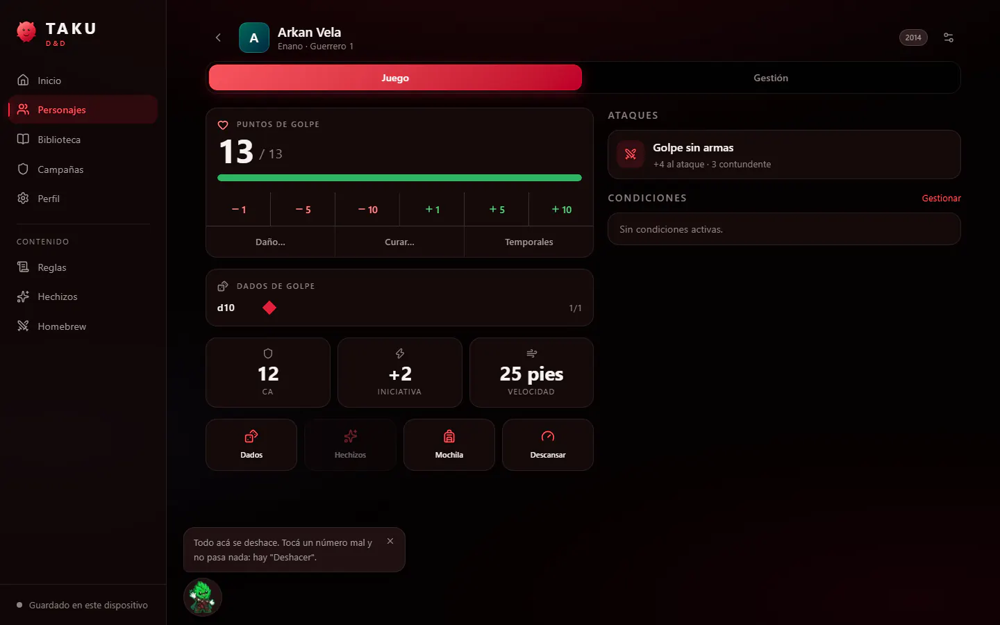
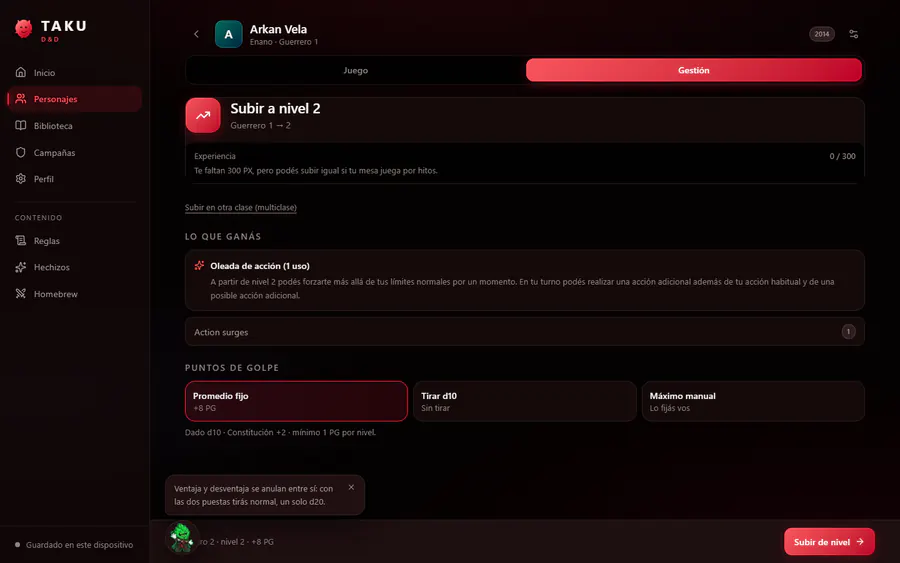
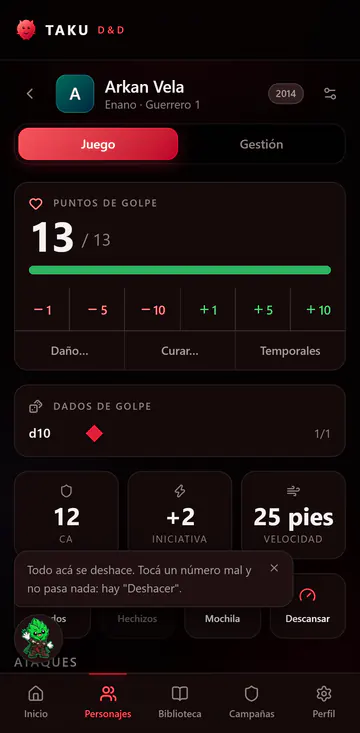

Producto propio · Takuverso · 2026
Publicada · en desarrolloTAKU D&D: fichas de rol que siempre cierran
Una app para crear, gestionar y jugar personajes de Dungeons & Dragons con las reglas de 2014 y de 2024. Funciona sin conexión y sin cuenta.
- Mi parte
- Diseño de la experiencia, arquitectura, desarrollo asistido por IA y tests
- Stack
- Next.js, React, TypeScript, Tailwind CSS, Zod, Dexie (IndexedDB), Supabase, Vitest, Playwright
- Año
- 2026
- Estado
- Publicada; la sincronización entre dispositivos todavía no se probó en uso real

El problema
En una ficha de D&D casi todo se calcula a partir de otra cosa: la clase de armadura depende de la armadura, el escudo y la destreza; subir un nivel cambia puntos de golpe, competencia, conjuros y rasgos al mismo tiempo. Si una app guarda esos números por separado, tarde o temprano dejan de coincidir.


Las decisiones que sostienen todo
- La ficha se calcula, no se guarda. Se guarda el estado del personaje y todo lo demás se deriva. Al subir de nivel cambia un solo dato y el motor deduce el resto.
- Cada número sabe de dónde viene. La interfaz puede explicar «CA 18 · Cota de malla 16 · Escudo +2» sin implementar ninguna regla.
- Los cambios se guardan como diferencias. Registrar «PG −7» en lugar de «PG = 23» evita conflictos al sincronizar varios dispositivos.
- Taku acompaña, no hace de tutorial. Explica una regla cuando empieza a importar, nunca al entrar a una pantalla, y cada consejo aparece una sola vez.
Calidad
264
tests unitarios y de integración, más 48 casos contra la base de datos.
112
tests de punta a punta con Playwright, en móvil y escritorio.
3.039
definiciones del SRD 5.1 y 5.2, buscables sin conexión y traducidas al español.
Lo que todavía no hace
La sincronización con dos dispositivos a la vez no se probó en uso real, y nadie la usó todavía con un lector de pantalla: lo que sí hice fue recorrer los flujos principales por el árbol de accesibilidad, que encontró seis fallos que ya están corregidos. Prefiero dejar esto escrito antes que dar por terminado algo que no lo está.